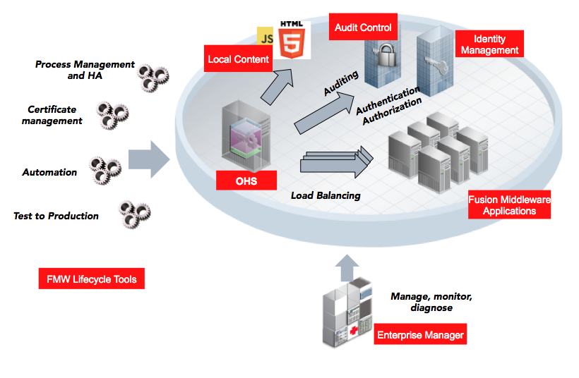

|
|
Oracle HTTP Server 12c는 입증된 오픈 소스 Apache HTTP Server 기술을 기반으로 하며 정적, 동적 웹 페이지를 호스트하고 Oracle Fusion Middleware 응용 프로그램의 프론트 엔드로 사용하기 위한 프레임워크를 제공합니다.  기능
설명서 및 유용한 링크 제품 설명서에는 릴리스 노트, 설치 및 관리 설명서가 포함되어 있습니다. |
|||
|
Copyright © 2017, Oracle and/or its affiliates. All rights reserved.
|